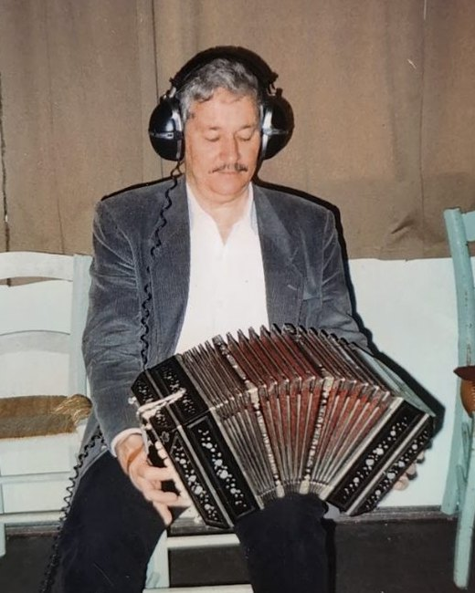

Learn the bandoneon. One button at a time.
The keyboard of a real bandoneon, with the recorded sound of a 1930 instrument. Free, no sign-up, in your browser.
Hello again! Shall we carry on?
- Opening
- –
- Closing
- –

From the first button to your first tango.
The app shows the next note before you get it wrong.
Academy
Exercises in 6 levels, from the first button to both hands. The right button lights up, and the instructor shows the current note and the next one.
RepeTCHÊ
The bandoneon plays, you repeat. Each tune comes in short 8-note stages, and the little gaúcho cheers every hit.
Melodies with sheet music
Scales in every key and public-domain tunes. As you play, the current note shows in green, with its name, and the bellows direction is suggested.
Opens in your browser. No account, no email, no payment.
- On your phone and computer · even offline, once installed
- Your progress stays on this device · with a backup in Settings
- In Portuguese, Spanish and English

Doly Costa is 97. And he still plays.
A bandoneon player from Caçapava do Sul, he played in the tango orchestras of Porto Alegre's radio stations and founded Os Posteiros. BanDoly is named after him.
Read the storyQuestions
Do I need a bandoneon?
No. You can learn the button map, reading and rhythms with just the on-screen keyboard. If you have one, the app listens through the microphone and checks the notes.
Is BanDoly free?
Yes. BanDoly is free and needs no sign-up. Your progress is saved in your browser, and you can export a backup in Settings.
Which bandoneon does the app use?
The Rheinische 142, the tango standard: 38 buttons on the right hand and 33 on the left, transcribed from the diagrams by Omar Caccia and Matías Gobbo. If yours differs, adjust the buttons in Keyboard → Edit layout.
Does it work on my phone?
Yes, in the browser on your phone or computer. Installed on your home screen, it even works offline.
Does it replace a teacher?
No. The app helps between lessons, but only a teacher can correct your posture, bellows and fingering.
Your first button is one tap away.
Free, no sign-up.
Practise today
My study
Your path, today's routine and your records, all in one place.
From the first button to tango
Today's routine
Your records
Lessons
11 short lessons with quizzes, from your first contact with the instrument to reading a tango score.
Music theory
The basics for reading music and understanding the exercises: notes, staff, note values, time signatures, scales and chords. All with sound.
Keyboard
All 71 buttons with real sound. Play, switch the bellows and see how each button changes note.
Tip: turn your phone sideways for more room, or view one hand at a time.
Challenges
Quick rounds to memorise the buttons and practise reading.
Find the note
The app shows a note and the bellows direction. Find the right button. Ten rounds; after two mistakes a hint appears.
During the challenge the button names are hidden.
Melodies
Listen, play in Wait mode and then in time. There are also guided scales and score import.
The button with the lilac outline is the next one to play. The color of each note shows the suggested bellows direction: opening closing. Switch direction with Space or check "Auto bellows".
Chords
Where the buttons of each chord are, opening and closing, in both hands.
On the bandoneon every chord must be learned twice, opening and closing, with different buttons. The options are the most compact shapes on the map, root in the bass first. "Inversion" means another chord note in the bass.
RepeTCHÊ
The bandoneon plays, you repeat. Each round the tune grows, until you play it all by ear.
Choose the tune
Tap a tune to start. Each tune is split into short 8-note stages: finish one to unlock the next. The bellows change direction on their own.
Your tunes
The melodies you create in Melodies (+ New) and the scores you import in the Academy (level 7) show up here. They stay on your device only.
Tune complete!
New record!
Rhythm
Tango accompaniments, with a metronome and the play-along mode.
Tango rhythms
Tap along
With the pattern playing, tap the button below (or press Space) along with each accent. The app measures whether you are early or late.
Bandoneon Academy
Exercises in 6 levels, from the first button to pieces with both hands, plus a level for your own sheet music. The instructor shows the note, hand, finger and bellows direction for each moment, and at the end you get a report on what went right and what to review.
I have the score as a PDF or photo
The app reads digital sheet music files, not images. To convert a PDF or a photo:
- Install MuseScore 4 (free) from musescore.org.
- Use File → Import PDF. The conversion is done by the musescore.com website and requires a free account.
- Check the notes in the converted score: automatic reading can make mistakes.
- Use File → Export → MusicXML and import the file here.
Use scores in the public domain or that you have the right to use.
Real bandoneon
Play your instrument: the app listens through the microphone, shows the note and lights up the button that gives that note.
For the app to hear well
- Find a quiet place and use "Calibrate the silence" before you start: the app measures the room noise for two seconds.
- Keep the phone or computer about half a metre from the instrument.
- Play one note at a time and hold it for half a second.
- The bandoneon sounds two reeds an octave apart, so the app accepts the right note in either octave.
Did it work here? Tick "Microphone" in the Academy or "Use microphone" in Melodies for the app to check the exercises.
Achievements
Badges you earn by practising. Share yours with your friends.
Send your student an assignment in three steps
The student opens the link and finds the exercise ready, with your message. At the end, they send you the report. No sign-up, no cost and no server.
Choose the exercise
Every Academy exercise and your own scores.
Set up the practice
The mode and speed the student will start with.
Write to the student
Your name and a short message appear on the assignment notice.
How it works
- You send the linkBy WhatsApp, email or however you like.
- The student opens it and practisesThe exercise is ready in the Academy, with your message.
- You get the reportCorrect notes, rhythm, bellows and the passages to review.
- The fingering goes alongIn "Edit fingering", in the Academy, choose the finger for each note.
Your own scores (My scores) can go in the link too: the student gets the music already transcribed to the buttons. Nothing goes through a server: everything travels inside the link.
Settings
Sound, tuning, note names and your data.
Sound and notes
Get in touch
Found a bug or have an idea for BanDoly? Your message helps improve the app.
Your data
Progress, created melodies and the button map are stored only in this browser. Make a backup so you lose nothing when clearing the browser, or to move everything to another device.
Button map
The app uses the Rheinische 142 map. If any button on your instrument is different, adjust it in Keyboard → Edit layout.
Account
Optional: keep your progress in the cloud and carry on where you left off on another device.
Sign in or create an account
Without an account, BanDoly works fully on this device, as always. With an account, your progress, the melodies you create and your settings are kept in the cloud.
Accounts are only for people aged 18 or over. Anyone younger can use the whole app without an account.
or get a sign-in link by email, no password needed
Your account
Signed in as
Your data in the cloud
Download a copy of everything stored in your account, or delete the account and its cloud data. The progress on this device stays here.